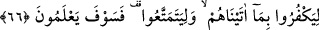
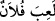

KEŞKE BİLMİŞ OLSALARDI!
64. Bu dünya hayatı sadece bir eğlenceden, bir oyundan ibarettir. Âhiret yurduna
(oradaki hayata) gelince, işte asıl yaşama odur. Keşke bilmiş olsalardı!
65. Gemiye bindikleri zaman, dini yalnız O’na has kılarak (ihlâsla) Allah’a
yalvarırlar. Fakat onları sâlimen karaya çıkarınca, bir bakarsın ki, (Allah’a) ortak
koşmaktadırlar.
66. Kendilerine verdiklerimize karşı nankörlük etsinler ve sefa sürsünler
bakalım! Ama yakında bilecekler!
“Bu dünya hayatı sadece bir eğlenceden, bir oyundan ibarettir.”
Bu âyette, dünya hayatını horlama ve aşağılamaya bir işâret vardır. Nasıl horlanmasın
ki onun Allah katında sivrisineğin kanadının ağırlığı kadar bir değeri yoktur.
Râğıb Isfahânî der ki: Dünya ve âhiret itibarıyla “hayat” iki kısımdır: dünya hayatı
ve âhiret hayatı.
Bu ifâde, dünyâ hayatının âhiret hayatının mukâbili olması hasebiyle “birinci hayat”
olduğuna işâret eder. Çünkü “__WORD__ (aşağı)” ile bazen sonuncusunun mukâbili olan
“birincisi” kasdedilir. Birinci hayattan maksad, insana yakın olan ölümden önceki bu
hayattır. “Âhiret” ile de kasdedilen de geriye kaldığı için ölümden sonraki hayattır.
“__WORD__ (Lehv)”, insanı oyalayan, asıl ve önemli olan şeylerden alıkoyan ve meşgul eden
şeylerdir. Oyun âletlerine de “ __WORD__ (melâhî)” denir. “__WORD__ (La‘b)”, oyun mânâsına gelir.
Bir kimse işlediği fiil ile doğru ve sahih bir şeyi amaçlamaz ise “__WORD__ /Falan oyun
oynadı” denir.
Kâşîfî der ki: “ __WORD__ (sadece bir eğlence)” Yani, sadece bir meşguliyet, aylaklık ve
oyundur. Yâni Çabucak geçip zeval bulması, çocukların oyununa benzer. Çocuklar bir
yerde toplanırlar, bir müddet onunla coşarlar. Kısa zaman sonra da bıkıp dağılırlar. Şâir
ne güzel söylemiş:
Bu dünya metâı çocuğu aldatan bir oyuncak gibidir